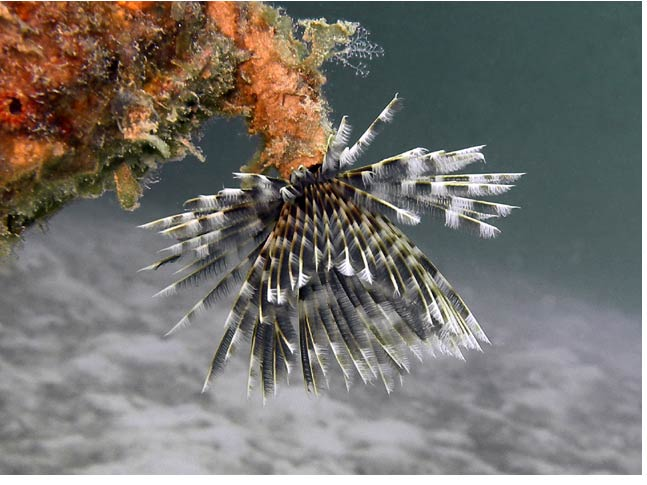

			  
			  
			  
                            <DIV align="center"><!-- RRS4 <A href="javascript:Onetransport()"> --> </a></DIV>
              </TD>
            </TR>
            <TR>
              <TD bgcolor="#ffffff">
                <DIV align="center">
                  <SELECT name="Oneslide" class="SmallBlack" onChange="Onechange();">
				  <OPTION value="Images/BI_Other_GROUP_03/01_Feather_Duster_Worm.jpg" selected>01   Feather Duster Worm</OPTION>
				  <OPTION value="Images/BI_Other_GROUP_03/02_Feather_Duster_Worm_Retracting.jpg">02  Feather Duster Worm Retracting</OPTION>
				  <OPTION value="Images/BI_Other_GROUP_03/03_Blue_Spotted_Ray.jpg">03   Blue-Spotted Ray</OPTION>
				  <OPTION value="Images/BI_Other_GROUP_03/04_Ray_Buried_in_Sand.jpg">04   Ray Buried in Sand</OPTION>
				  <OPTION value="Images/BI_Other_GROUP_03/05_Conical_Sea_Cucumber.jpg">05  Conical Sea Cucumber</OPTION>
				  <OPTION value="Images/BI_Other_GROUP_03/06_Euselenops_luniceps_Slug.jpg">06   Euselenops luniceps Slug</OPTION>
				  <OPTION value="Images/BI_Other_GROUP_03/07_ Yellow_Tunicate.jpg">07   Yellow Tunicate</OPTION>
				  <OPTION value="Images/BI_Other_GROUP_03/08_Bi-Valve.jpg">08   Bi-Valve</OPTION>
				  <OPTION value="Images/BI_Other_GROUP_03/09_Social_Feather_Dusters.jpg">09   Social Feather Duster Worms</OPTION>
				  <OPTION value="Images/BI_Other_GROUP_03/10_Eagle_Ray.jpg">10   Eagle Ray</OPTION>
				  <OPTION value="Images/BI_Other_GROUP_03/11_Tunicate_Ball.jpg">11  Tunicate Ball</OPTION>
				  <OPTION value="Images/BI_Other_GROUP_03/12_Tigertail_Sea_Cucumber.jpg">12   Tigertail Sea Cucumber</OPTION>
				  <OPTION value="Images/BI_Other_GROUP_03/13_Pelagic_Tunicate.jpg">13   Pelagic Tunicate</OPTION>
				  <OPTION value="Images/BI_Other_GROUP_03/14_Feather_Sea_Pen.jpg">14   Feather Sea Pen</OPTION>
				  <OPTION value="Images/BI_Other_GROUP_03/15_Pelagic_Tunicate.jpg">15   Pelagic Tunicate</OPTION>
				  <OPTION value="Images/BI_Other_GROUP_03/16_Sea_Cucumber.jpg">16   Lumbering Sea Cucumber</OPTION>
				  <OPTION value="Images/BI_Other_GROUP_03/17_Swimming_Crinoid.jpg">17   Swimming Crinoid</OPTION>
				  <OPTION value="Images/BI_Other_GROUP_03/18_Tunicate.jpg">18   Tunicate</OPTION>
				  <OPTION value="Images/BI_Other_GROUP_03/19_Fireworm_Family.jpg">19   Fireworm Family</OPTION>
				  <OPTION value="Images/BI_Other_GROUP_03/20-Worms_During_the_Spawn.jpg">20   Worms During the Spawn</OPTION>
				  </SELECT>